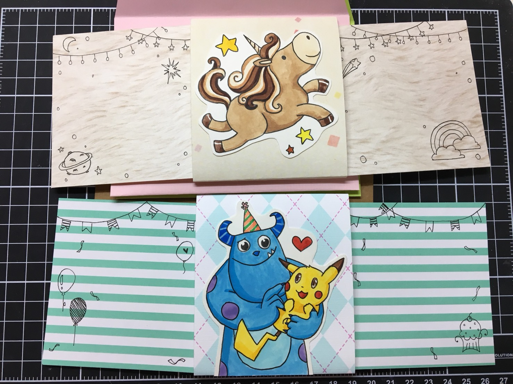
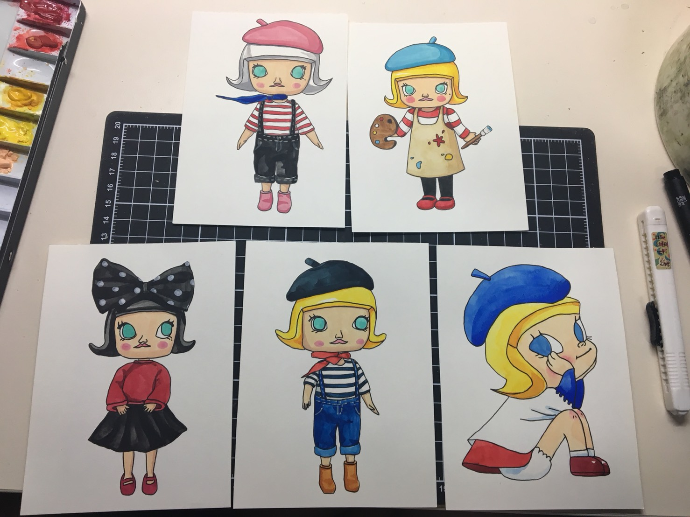
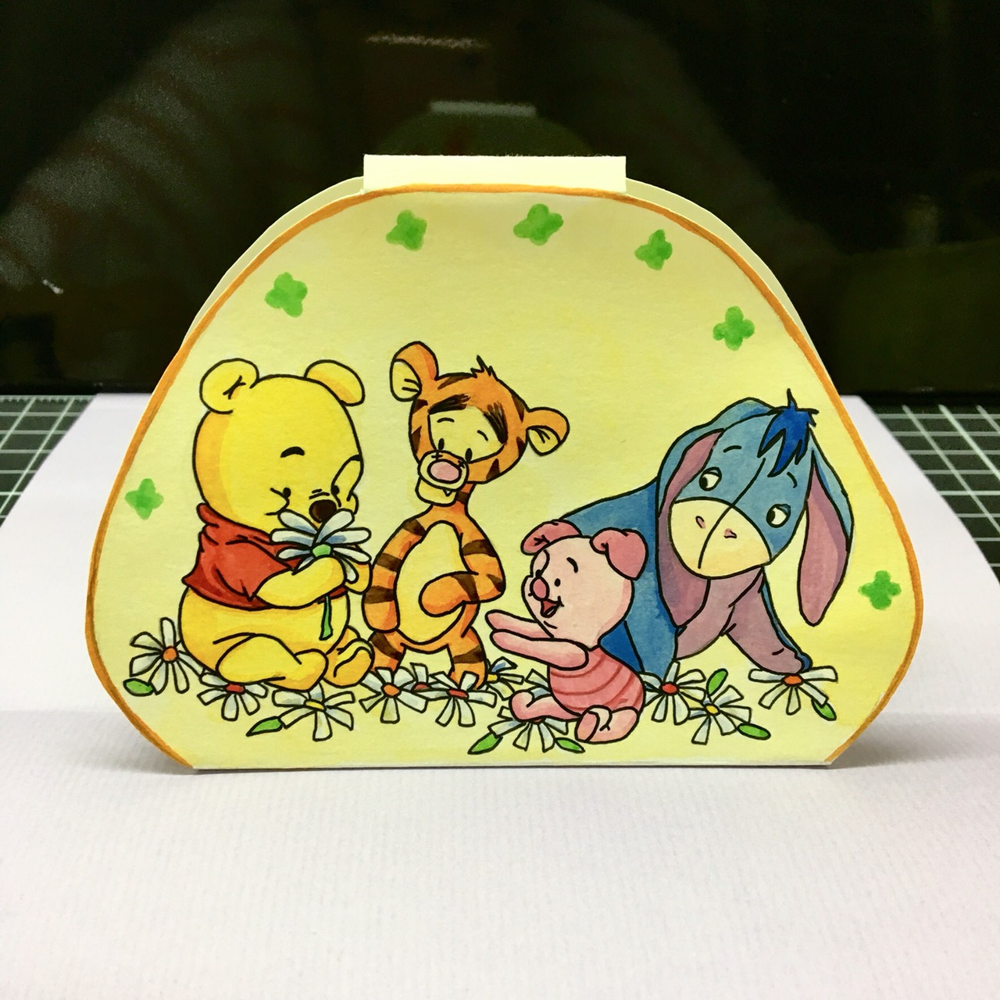

從小就很喜歡畫畫，直到國中考上美術班，才真正開始走向美術這條路，其實我的繪畫技巧一直都很普通，但由於升學問題，學校不得不把繪畫定一個標準，這樣才能區分學校的好壞，但等到我越來越大，發現到其實在現代社會中，如果你想把自己的繪畫風格展現給別人看，技法好並不是首要的，最重要的其實是“創意”，有時即使只是幾個簡單的線條，只要其中的內涵能貼近人心，就可以達到現代人所喜歡的標準。
在這科技發達的時代，使用社群媒體的人很多，更別說是在網路上購物了。在我高三那年，我的姐姐提議與她在網路上賣“手做卡片”，我剛好沒有零用錢，所以當然很開心地接受了，我和她分工合作，工資平分，利用現代年輕人喜歡“客製化”這點來賣自己手繪的卡片，沒想到挺受歡迎的，前幾個月比較認真在經營，生意不錯，但由於後來課業繁忙，姐姐工作忙碌的關係，下架了許多商品，客人就沒以前多，但我偶爾還是會收到訂單，繼續我的小小事業。
美術陪伴了我上半輩子，相信我的下半輩子也會與它形影不離，如果沒有了它，我一定連國立大學都考不到，許多人都說，讀美術的人會吃不飽，但我覺得我們只需要一顆靈活有創意的腦袋，加上些繪畫天分，即使無法像過去那些名人一樣畫出偉大的畫作，也能創作出自己的一片天。


